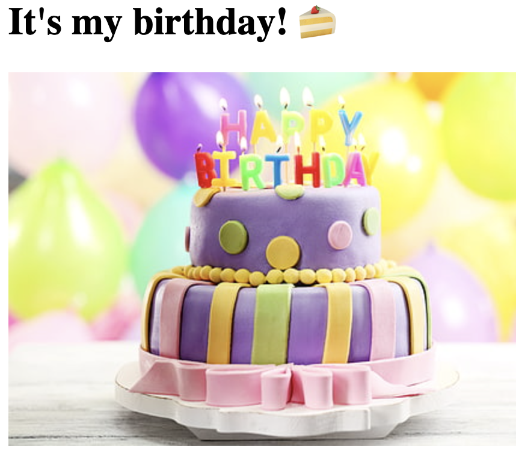
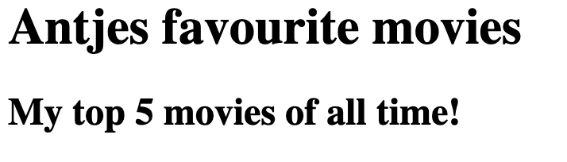

These are some simple projects we learned through an awesome online course in HTML only. I tried my best to be creative with the means given under this circumstances. ✨
A simple project to showcase an invitation to our birthday, along with an image and some lists. Super fun!
Here we were given the task to rank our five favourite movies. As you can imagine, thinking of your most liked films suddenly becomes a difficult task!
